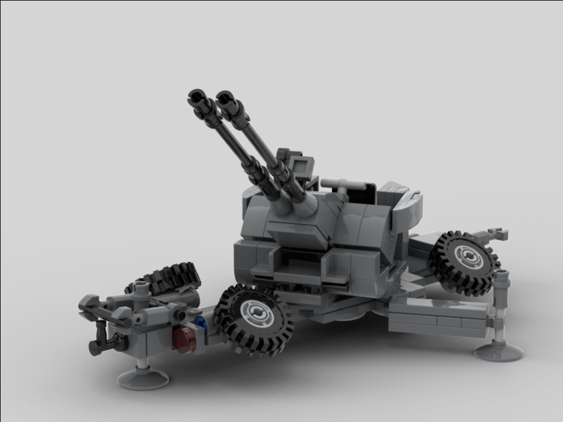
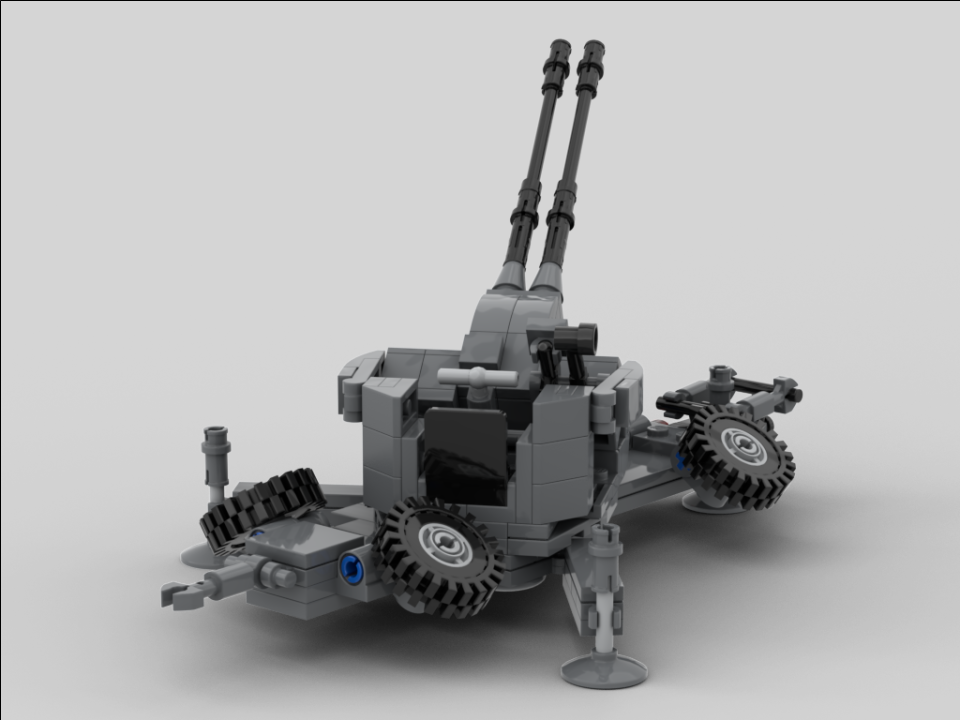

The Skyguard 35mm autocannon is the anti-aircraft gun unit of the Skyguard system. It sports two 35mm autocannons with a fire rate of 550 rds/min per barrel (1100 rds/min total) and a maximum range of 4000 m (13,100 ft). The guns can either be fired or with radar assist, and are crewed by either one operator or one operator and two loaders, depending on the model. The 35mm guns have also been mounted on other SPAAG vehicles, such as the German Gepard and the Japanese Type 87.
This model features fully rotating twin autocannons with an elevation of around 40 degrees, a stand to hold up the barrels during transport, two outriggers that fold out on the side and one in the front, and four rolling wheels (wow!) that fold up during deployment position.
Deployed:
